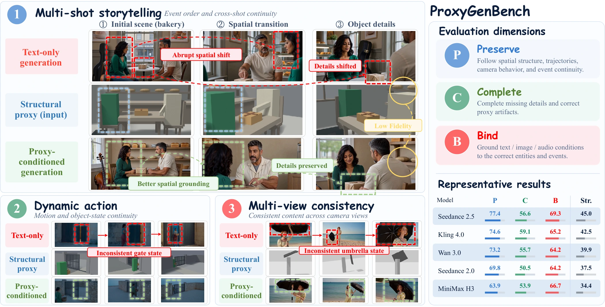
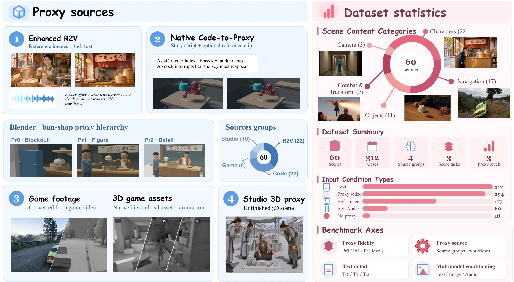

ProxyGenBench
Benchmarking Proxy-Guided Video Generation
1 New Laboratory of Pattern Recognition, Institute of Automation, Chinese Academy of Sciences
2 UC San Diego3 HKUST4 Tencent
5 School of Artificial Intelligence, University of Chinese Academy of Sciences
SELECTED EXAMPLES
A rough proxy. A richer world.
Matched generations, with and without structural guidance.
Coarse geometry. Intentional structure.
The room and object details drift across cuts.
More stable seating, eyelines, and parcel placement.
00:00 / 00:15
MiniMax-H3
Two people, one parcel, three shots. Proxy guidance anchors the same conversation in the same space.
NATIVE PROXY · MULTI-SHOTGeneration text Pr0 · T2
With proxy

60Scenes
312Evaluation cases
5Video generators
32Fine-grained criteria
THE BENCHMARK
01 / 04Preserve. Complete. Bind.
A proxy is a plan.
Not the final video.
Recent video generators produce realistic videos, yet controlling how scenes unfold remains challenging. Structural proxies, such as animated 3D blockouts, specify scene layout, motion, camera behavior, and event order. But coarse inputs leave details unspecified and may contain artifacts that should not be reproduced.
ProxyGenBench studies three interacting requirements: preserve the intended structure, complete missing content and correct proxy artifacts, and bind additional text, image, and audio conditions to the right entities and events.
Preserve
Keep the plan.
- Spatial structure
- Motion & camera control
- Temporal & shot continuity
Complete
Realize the scene.
- Visual realization quality
- Motion & physical plausibility
- Proxy abstraction handling
Bind
Connect the conditions.
- Entity & appearance grounding
- Action & audio-event grounding

SCENE TASKS
Dynamic action
Multi-shot storytelling
Multi-view consistency
PROXY FIDELITY
Pr0 · Blockout
Pr1 · Figure
Pr2 · Detail
INPUT VARIATIONS
Text detail · T0 / T1 / T2
Image & audio references
Matched reference ablations
CHECKLIST-GUIDED EVALUATION
02 / 04Ground every score in evidence.
Case-specific checklists are generated from the available inputs, verified, and fixed before scoring. All models on the same case share the same checklist.
01Available inputsProxy + text + references
02Generate & verifyInput-grounded checklist
03Score evidenceVisual and audio judgments
04AggregateP / C / B + Strict
Two paths. One pillar. The same identities.
Pillar crossing · Native Proxy · Pr0 + T2 · Seedance-2.5
Requested times from the generation text, not claims that the output meets them.
Character references
Generation prompt
FULL CHECKLIST · 29 CRITERIANormalized score · 0–1
Loading case checklist...
Three audio-reference checks do not apply because no reference audio was supplied.
STRUCTURE-AWARE AGGREGATION
Good-looking is not enough.
Critical structural failures reduce the overall score, even when appearance or binding is strong.
S = Q × ρ2Q: mean of applicable dimensions
ρ: fraction of critical Preserve checks that pass
ρ: fraction of critical Preserve checks that pass
BENCHMARK RESULTS
03 / 04Leaderboard
Structure-aware evaluation across five video generators.
Ranked by Strict score
| Rank | Model | Preserve | Complete | Bind | Average | Strict | Joint |
|---|
Paper-reported results, ranked by Strict within each input-reference group. Scores are on a 0–100 scale; higher is better. Joint is the percentage passing all critical Preserve checks. Missing outputs receive zero. Audio means independent input audio references, not generated audio.
What the benchmark reveals
Proxies improve spatiotemporal control.
Proxy-guided outputs are preferred in 35 of 50 matched pairs under the two-order VLM protocol. The other outcomes are ties or order-dependent.
More detail does not mean better completion.
Across all five models on shared T2 scenes, Pr0 → Pr2 improves Preserve by 1.1–6.7 percentage points, while Complete decreases by 4.8–7.9 points.
PreserveComplete
Following the structure is not condition binding.
Voice/source matching averages 0.768, but audiovisual timing alignment reaches only 0.513. The right voice can still arrive at the wrong moment.
BUILDING ON THIS WORK
04 / 04Citation & resources
Evaluation code and dataset are under review.
Public release will follow completion of the review.
BIBTEX
@misc{tang2026proxygenbench,
title={ProxyGenBench: Benchmarking Proxy-Guided Video Generation},
author={Tang, Zhenchen and Lu, Haolin and Yang, Songlin and
Zhao, Xiaotong and Zhang, Ran and Peng, Bo and Li, Shuai and
Fan, Haotian and Zhong, Haobin and Zhang, Yanni and
Li, Songlian and Zhang, Ning and Gao, Xun and Zhao, Alan and
Dong, Jing},
year={2026},
note={Preprint},
url={https://2kxx.github.io/ProxyGenBench/}
}